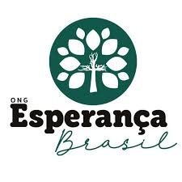

Missão
Nossa missão é promover a inclusão social por meio da educação, da cultura e do acesso à cidadania, contribuindo para a formação de uma sociedade mais justa e solidária.
Nossa missão é promover a inclusão social por meio da educação, da cultura e do acesso à cidadania, contribuindo para a formação de uma sociedade mais justa e solidária.
A ONG Esperança nasceu do desejo de transformar realidades e oferecer novas oportunidades para comunidades em situação de vulnerabilidade. Atuamos há mais de 10 anos com projetos voltados à educação, cultura, saúde e sustentabilidade, sempre buscando o fortalecimento da cidadania e da dignidade humana.
Nossa equipe é formada por voluntários, profissionais dedicados e parceiros que acreditam que um mundo mais justo só é possível através da solidariedade, do respeito às diferenças e da valorização da vida.
Ser referência nacional em projetos socioeducativos, impactando positivamente a vida de milhares de pessoas e fortalecendo comunidades em situação de vulnerabilidade.
Atender às pessoas das comunidades carentes, visando uma melhora no acesso a serviços básicos para a vida humana e dignidade.
Quer saber mais ou apoiar nossos projetos? Envie um e-mail para: contato@ongesperanca.org
